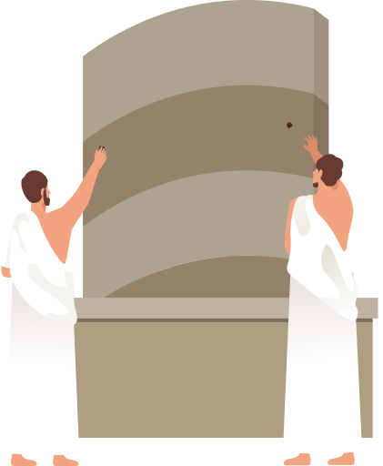

Hajj Altamatue
Reassume Ihram and the intention to perform Hajj
Travel to Mina
Travel to Mt. Arafat to perform Wafuq
Offer Prayers in Muzadalifah

Perform Rami in Mina

Animal Sacrifice – Nahr
Perform Tawaf and Sa’iy
Perform the Farewell Tawaf
compelete the journey